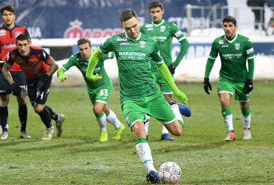

Олег Бойчишин: «Створили достатньо, але не змогли дотиснути суперника»

Олег Бойчишин: «Створили достатньо, але не змогли дотиснути суперника»
Післяматчевий коментар в.о. головного тренера «Карпат».
– На гру виходили дві команди, які опинилися в складній ситуації, обом не було що губити. Тому сама гра видалася доволі цікавою. Мені здається, що «Карпати» повністю контролювали гру, створили достатньо моментів, щоб перемогти, але так сталося, що дотиснути суперника не вдалося.
– Ви вже тренували «Карпати». Ті, які залишали і зараз – яка між ними різниця?
– Важко про різницю говорити. Я з ними працював, ми спілкувалися раніше. Сьогодні ми перейшли на іншу схему, як колись грали. Якби не були знайомі, то, безперечно, нічого не міняли б. Все з задуманого вдалося, єдине – не змогли другий гол забити.
– Федецький активно кричав на своїх партнерів. Він частина тренерського штабу?
– Він лідер, десь таке буває, що заводить з середини команду на боротьбу, на агресію, це в нього виходить непогано.
– На скільки ви в «Карпатах»?
– Мені довірили команду довести до паузи, а далі керівництво буде вирішувати.
Інформаційний центр ФК «Карпати»
Фото: © ФК «Карпати»
Максим Кучинський: «Для перемоги нам забракло трохи часу»

Максим Кучинський: «Для перемоги нам забракло трохи часу»
Після досить тривалої паузи місце у карпатівських воротах зайняв Максим Кучинський. Фактично, роботи в кіпера було не надто багато, однак витягати м’яча із власних воріт все ж довелося – Папа Гуйє зрізав круглого у сітку...
«Моє повернення? Усе нормально, ми ж готуємося до кожного матчу, однаково тренуємося. Сьогодні мені дали шанс вийти в основі, про це я дізнався на установці. Працював на повну силу, протягом матчу підказував захисникам маршрути їхнього пересування, щоб максимально зберегти ворота. На жаль, один гол ми пропустили. Вважаю, що це загальна помилка. Ми йшли в атаку, обрізалися, не змогли втримати прорив суперника і його простріл. Дуже шкода, що так сталося».
«У перерві Олег Іванович просив нас заспокоїтися і підбадьорив. Він запевнив, що у нас все вийде – головне вірити і грати у свій футбол. У підсумку, ми відігралися, але перемогу не здобули. Я думаю, що ми втратили два очки, мали вигравати цей матч. Так, пропустили першими, дуже складно було відігратися. Гадаю, якби ще трохи часу – ми б таки здобули три очки» – підсумував кіпер «Карпат».
Інформаційний центр ФК «Карпати»
Фото: © ФК «Карпати»
Олексій Гуцуляк: «Результатом не задоволені»

Олексій Гуцуляк: «Результатом не задоволені»
Форвард «Карпат» був одним із найпомітніших персон матчу проти «Арсенала». У першому таймі він мав кілька хороших епізодів, але відзначитися вдалося лише по перерві, з пенальті. Після гри Олексій прокоментував основні моменти матчу.
«Звичайно, результатом ми не задоволені. Дуже прикро, що пропустили такий гол, фактично самі собі забили і я маю на увазі не лише конкретно автогол. Напевно, десь це нас притисло психологічно. От я два моменти мав і жодного не використав. Вважаю, що спокою забракло. Штрафний – то таке, не завжди залітає, тим паче ми грали новими м’ячами, зовсім до таких не звикли. А коли виходив сам на сам, то треба було прибрати воротаря вліво чи вправо, а я вирішив пробити – він мене прочитав і дуже грамотно склався...» – каже Гуцуляк.
«У другому таймі ми забили пенальті і могли дотиснути суперника, але знову ж таки, трішки спокою забракло. Вони постійно час тягнули у стилі «ай-ай... фол-фол», а це неймовірно збиває з ритму. «Арсенал» хотів зберегти нічию і в принципі, із власної позиції, все правильно робив».
«Чому я бив пенальті? Так сказав тренер. Я зробив те, що потрібно – забив гол» – підсумував Олексій Гуцуляк.
Інформаційний центр ФК «Карпати»
Фото: © ФК «Карпати»